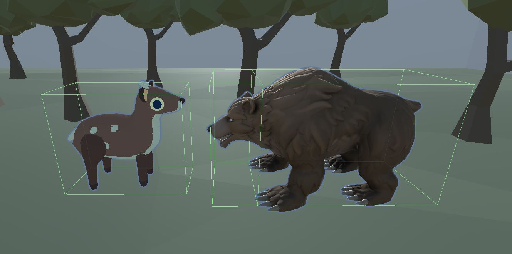
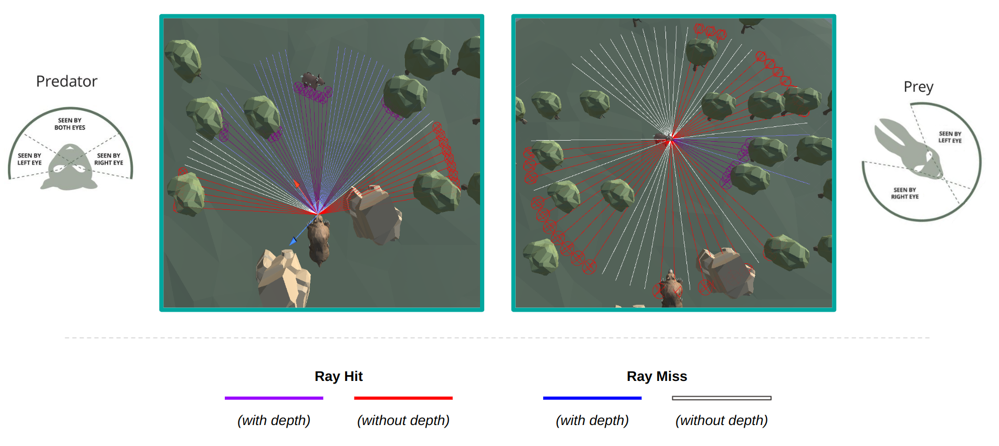
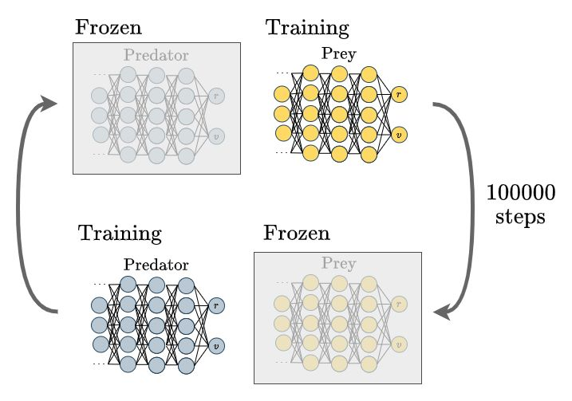

Whilst the prey and predator have opposing objectives, they share similar characteristics. Both agents operate
within a continuous action space with two degrees of freedom: rotation about the \(y\)-axis and forward/backward movement.
Each degree of freedom allows the agent to select a value between \([-1, 1]\), determining the direction and intensity of
movement. The agents' behavioural parameters consist of maximum movement and rotation speeds, which scale this intensity
value. Notably, the predator possesses an additional box collider located at its face, resulting in the prey's death
upon collision. Conversely, the prey lacks this collider as its primary goal involves evading the predator.

Box colliders for the predator and prey agents
In order to simulate various vision fields, we employ a modified version of the ML-Agents Ray Perception sensor. This
sensor uses a collection of ray casts originating from a central point. Several parameters are available to manipulate
the vision, including ray angles (to establish the field of view), ray length (to determine the depth of field), number
of rays (to regulate ray density/resolution), and a list of tags for filtering detected objects. Each ray conveys the following
information: a flag indicating whether it collided with a tagged object, a one-hot encoded vector identifying the object
type, and the normalized distance to the hit object relative to the ray length. Consequently, the sensor's output
comprises a flattened vector encapsulating the information encoded within each ray.
To control the region of binocular vision, we have extended this sensor to incorporate a parameter representing
the number of depth rays. We make the simple assumption that agents can see the presence and type
of an object across their entire field of view, but only have depth perception in their binocular region.
Consequently, we exclude depth information for any rays falling outside this region by
assigning a distance of \(-1\). Using this modified Ray Perception sensor, we define two distinct sensor types:
predator-style and prey-style, which draw inspiration from the characteristic vision traits observed in real-world
predators and prey [16], respectively.

Predator- and prey-style ray perception sensors
Utilizing the modified Ray Perception sensor offers distinct advantages for this paper by providing precise
control over the simulated vision fields. Customizable parameters such as field of view and depth of field enable
alignment with the specific requirements of the prey and predator agents in the simulated environment. This level of
control ensures that the sensory input accurately reflects the desired characteristics of the vision of the agent.
Furthermore, using the modified Ray Perception sensor instead of raw camera inputs enhances training efficiency by
reducing the computational burden of processing high-dimensional image data.
The setting of predator-prey dynamics can be framed as a two-player dynamic game [6],
[7]. This formulation captures the interactions and influence of the agents on the state of the game, providing a framework
for studying predator-prey dynamics based on a common utility function. The game is only played for a set number of
steps, until it is terminated.
In our formulation, the state and action spaces align with the descriptions provided in the previous sections,
allowing for a consistent representation of the game dynamics. The transitions between states are determined by
the underlying physics engine, ensuring a realistic simulation of the predator-prey environment.
$$
G_\text{pred} = \sum_{i=1}^{T}\left[\frac{𝟙(\text{prey caught at } t)}{N_\text{prey}} - \frac{1}{T}\right]
$$
$$
G_\text{prey} = - G_\text{pred}
$$
The reward structure employed in our proposed framework, as illustrated in the figure above, incorporates a constant time
penalty applied to the predator at each time step, and a positive reward if a prey is caught. This deliberate design
choice serves to incentivize the predator to capture prey at the earliest opportunity. Conversely, the reward for the
prey is formulated in the opposite manner, establishing a zero-sum game. The range of rewards is bounded within the
interval \([-1, 1]\). This reward specification enables a natural distinction between favorable and unfavorable
outcomes of both agents.
Furthermore, since the predator-prey game exhibits an inherent asymmetry, it can be expressed as an asymmetric
zero-sum game. Unlike games such as soccer, where teams have shared objectives, the predator and prey agents
pursue conflicting goals. The asymmetry arises from the distinct policies used by the different agents, resulting
in strategic dynamics that differ from those observed in symmetric games.
Overall, the nature of the game poses additional challenges, as it suffers from many of the problems in
competitive multi-agent learning [8]. Multi-agent reinforcement learning in competitive scenarios
poses several challenges [9]. In this paper, we employ a prominent technique called "self-play"
[10], [11]
to address these difficulties. The diagram below provides a high-level overview of this approach.

Diagram showing the self-play mechanism
Initially, either the predator or prey agent is trained, while the model of the other agent remains frozen. After
a predetermined number of iterations, the frozen model is trained, and the other agent's model is frozen.
However, a potential issue arises from the bias introduced by repeatedly playing against the most recent model.
This bias can lead to overfitting and poor generalization. To mitigate this problem, we incorporate an ELO ranking
system as done in MuZero [12], enabling models to compete against earlier versions of their opponents.
By doing so, we reduce the impact of bias, leading to improved generalization and robustness in the learned policies.


{kind=link}
{kind=link}
{kind=link}
{kind=link}
{kind=link}
{kind=link}
{kind=link}
{kind=link}
{kind=link}